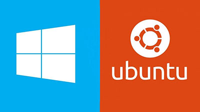

Переход с Windows на Linux

Многие пользователи считают операционные системы Windows единственными на рынке OS, ведь ими пользуются буквально все, но так ли это на самом деле? В данном проекте я хочу представить Вам отличную альтернативу - Linux. Существует множество дистрибутивов на базе Linux, как простых, для новичков, так и профессиональных, с гибкими настройками и сложной системой безопасности. Моя цель – заинтересовать новых пользователей в знакомстве с Linux.